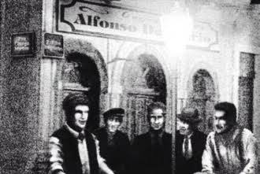
ALMA DA FIEL / NOSSA HISTÓRIA
Mais de um século de paixão
Uma história construida dentro de campo e eternizada por sua torcida
ALMA DA FIEL / LINHA DO TEMPO
CAPÍTULOS INESQUECÍVEIS
Relembre os principais momentos da nossa história. Cada conquista, cada luta e cada título fazem parte do que nos torna único
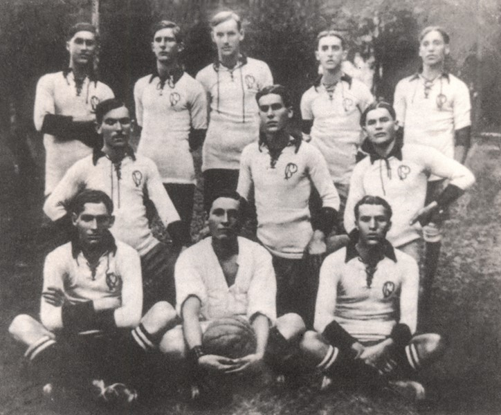
O nascimeto do Corinthians
Fundação do Sport Club Corinthians.A origem de uma trajetória que atravessaria gerações.
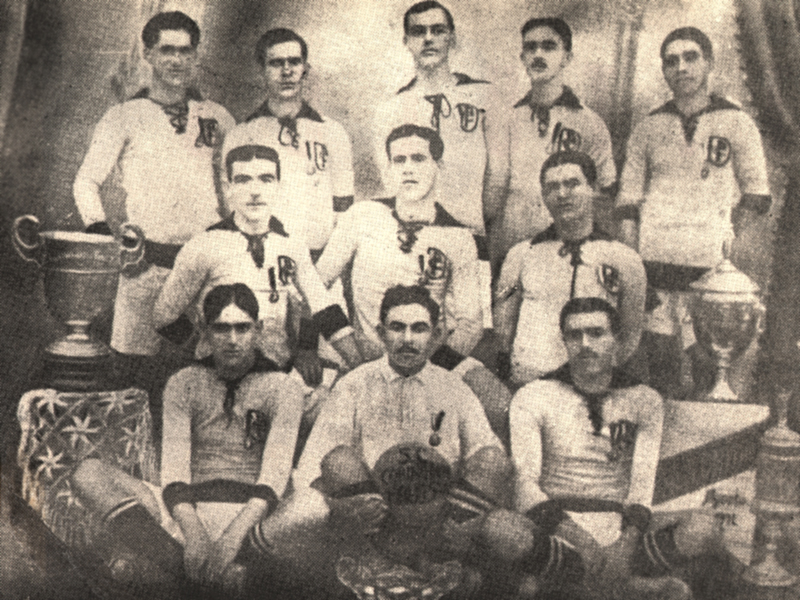
Primeira conquista paulista
O primeiro título do Campeonato Paulista.Um dos maiores capitulos da história alvinegra.
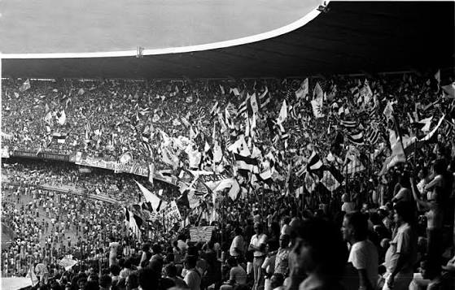
Invasão Corinthiana
70 mil torcedores do Corinthians viajaram para o Rio de Janeiro para assistir à semifinal contra o Fluminense no Estádio do Maracanã.
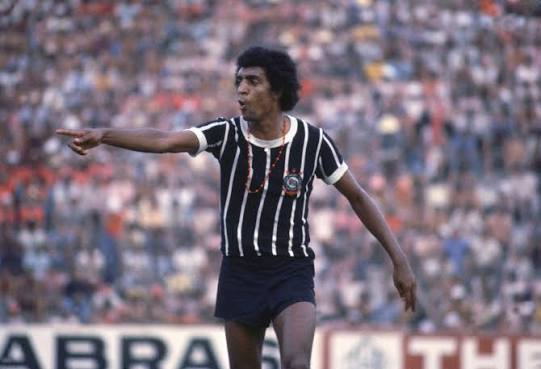
Fim do jejum corinthiano
O Corinthians venceu o Campeonato Paulista de 1977 em 13 de outubro de 1977, derrotando a Ponte Preta por 1 a 0 no Estádio do Morumbi e encerrando um jejum de quase 23 anos sem títulos importantes.
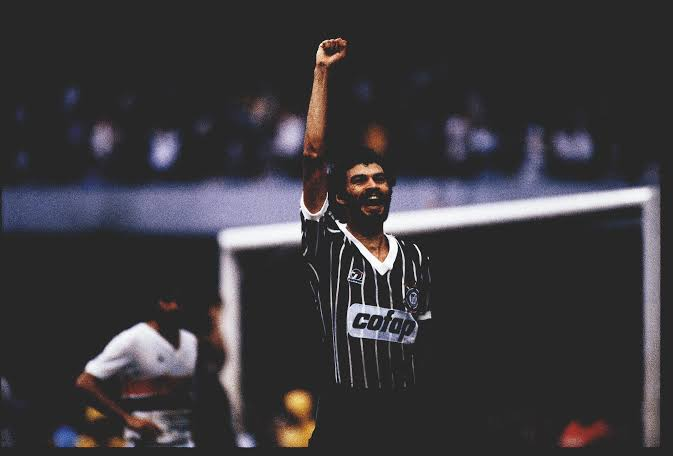
Democracia Corinthiana
O Corinthians viveu na década de 1980 uma das eras mais marcantes, politizadas e vitoriosas. Marcada pelo nascimento da Democracia Corinthiana e por importantes conquistas no futebol.
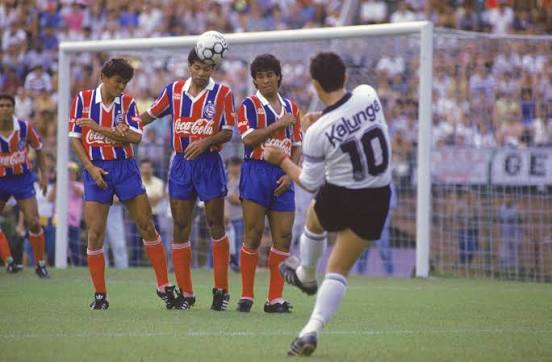
O primeiro Brasileirão
O Corinthians conquistou o seu primeiro título do Campeonato Brasileiro em 1990, vencendo o São Paulo nas duas partidas da final

O primeiro Mundial de Clubes
Corinthians conquistou o Primeiro Campeonato Mundial de Clubes da FIFA em janeiro de 2000.
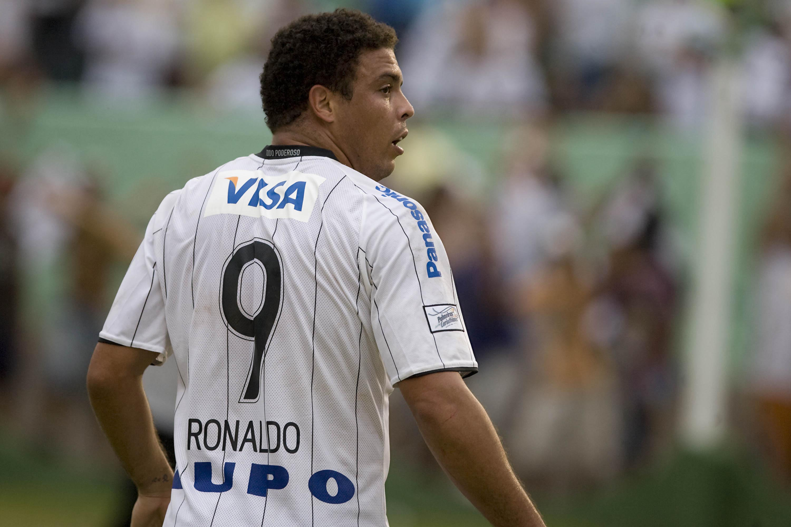
A queda e a volta
O rebaixamento para a Série B em 2007 e a volta por cima com o título da Segunda Divisão em 2008.
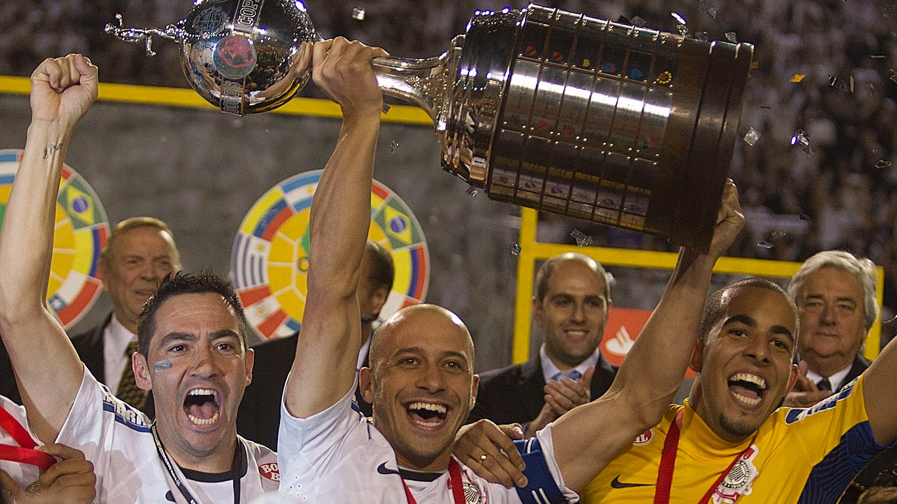
A américa é Alvinegra
O Corinthians foi o campeão da Copa Libertadores da América de 2012, conquistando o seu primeiro título na história de forma invicta.
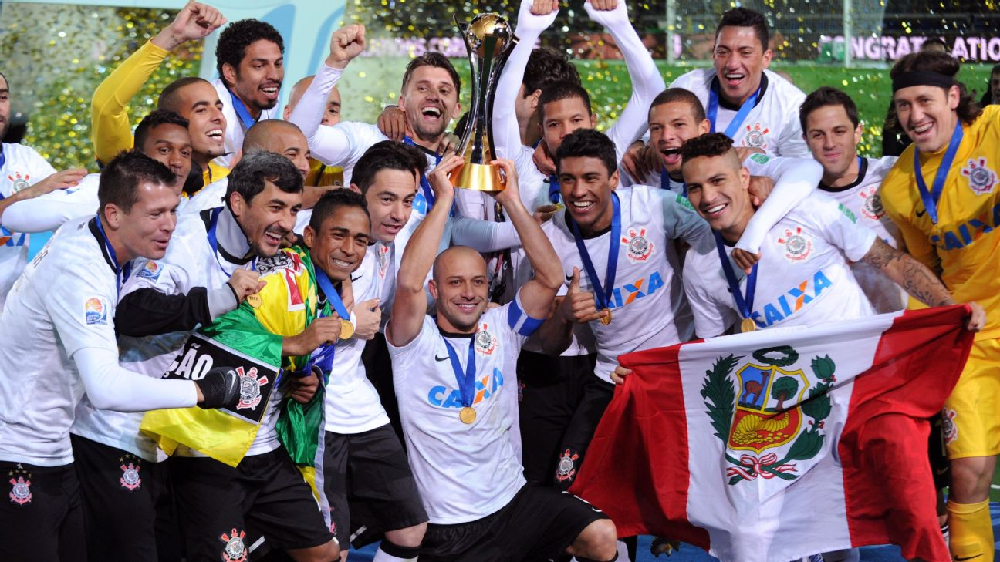
O mundo é do Corinthians
O Corinthians foi o campeão do Mundial de Clubes da FIFA de 2012 ao vencer o Chelsea. No dia 16 de dezembro de 2012, no Estádio Internacional de Yokohama, no Japão.
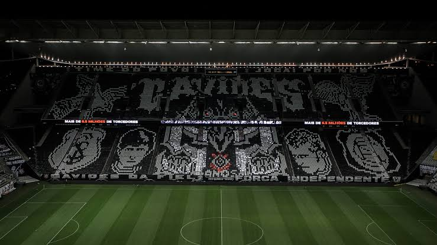
ALMA DA FIEL / E A HISTÓRIA CONTINUA
Você conhece a história que carrega?
De 1910 aos momentos que marcaram gerações. Teste seus conhecimentos sobre as conquistas, os ídolos e a identidade corinthiana.
7 perguntas • múltipla escolha